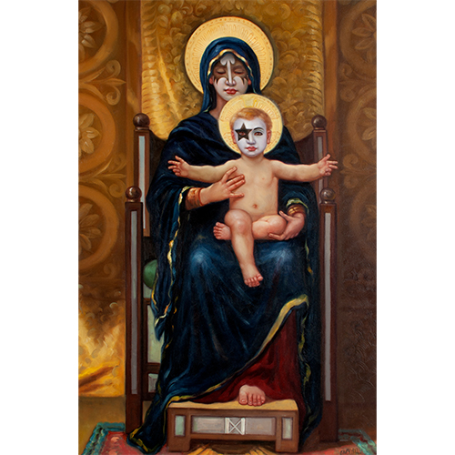

Exhibitions
The Secret History of Kiss, Shooting Gallery, New York, New York, US, November 1–December 6, 2008.
Literature
Ron English, Original Grin: The Art of Ron English (Paris: Cernunnos, 2019), p. 41. ISBN 978-2374950938.
Notes
This composition was later repurposed by the artist as a limited-edition print in the Vinyl Chord: A Revolutionary Record Store series.

This work references William-Adolphe Bouguereau's painting La Vierge au lys.